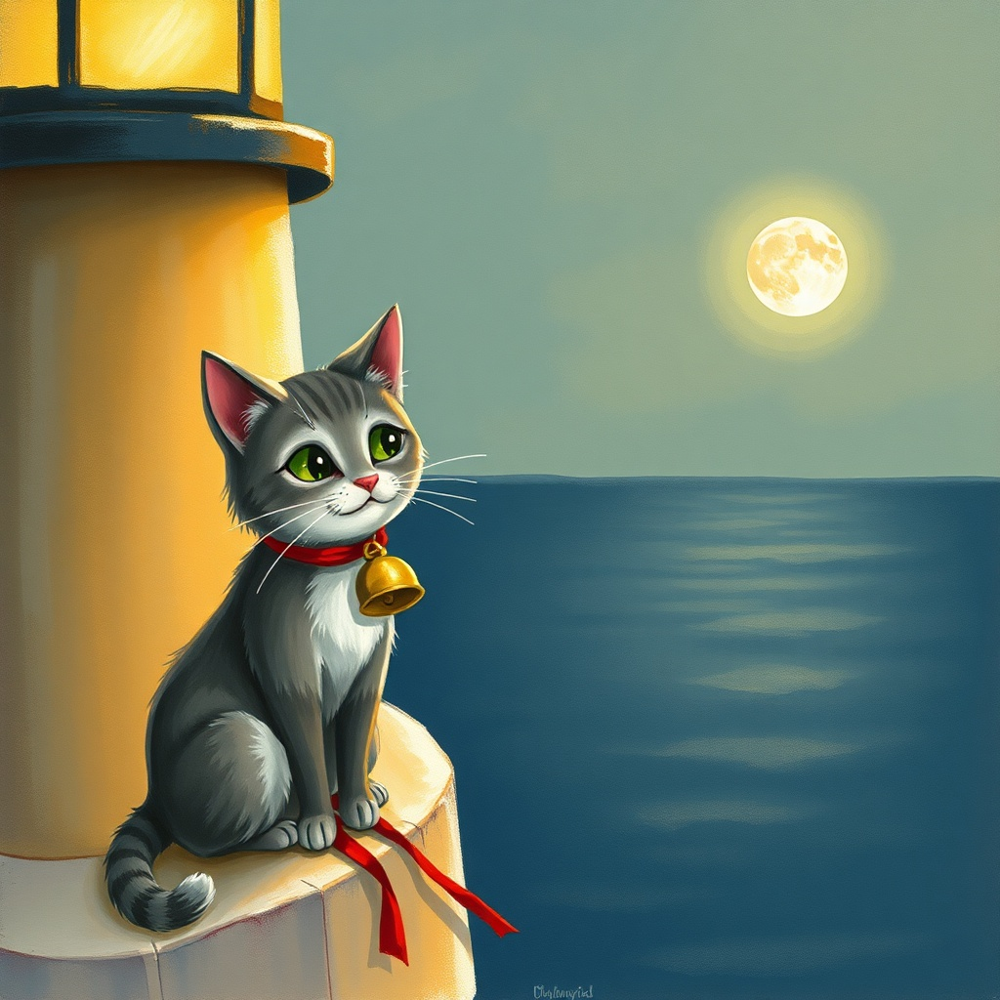
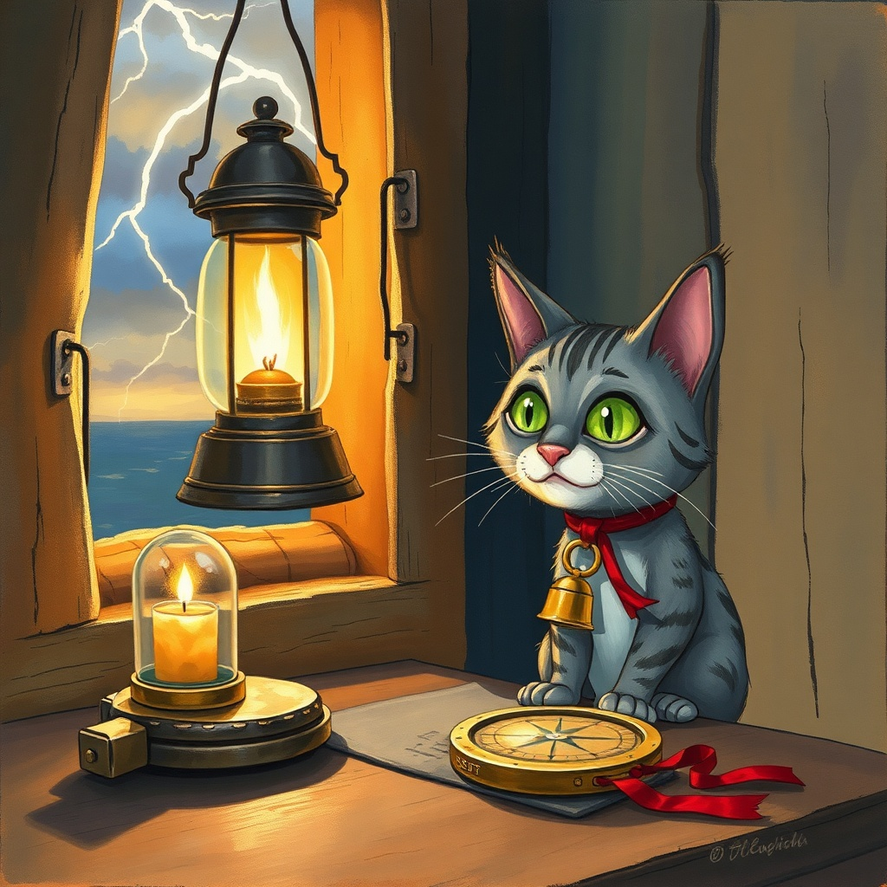
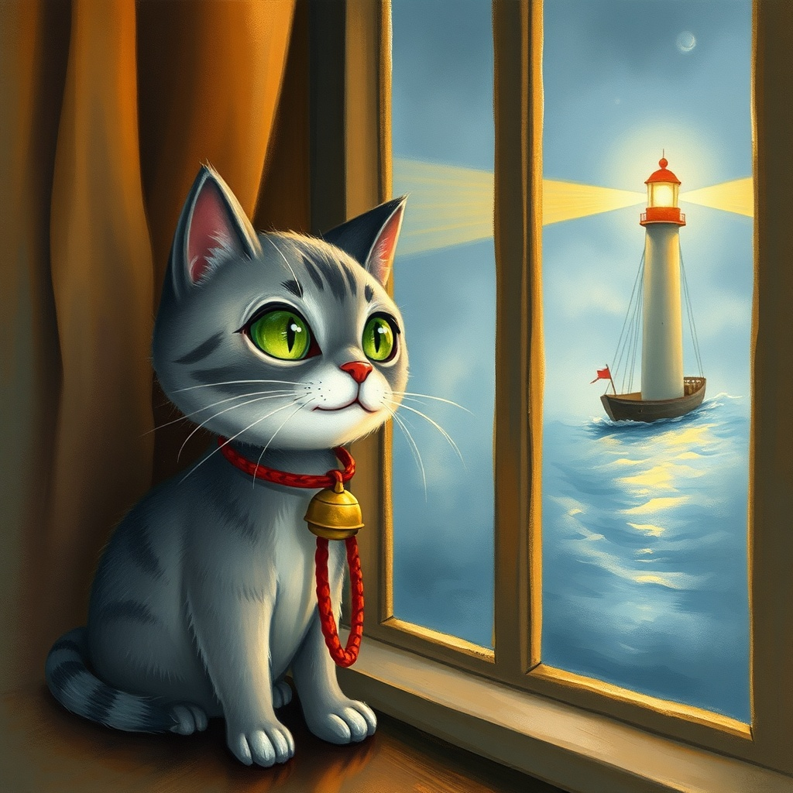
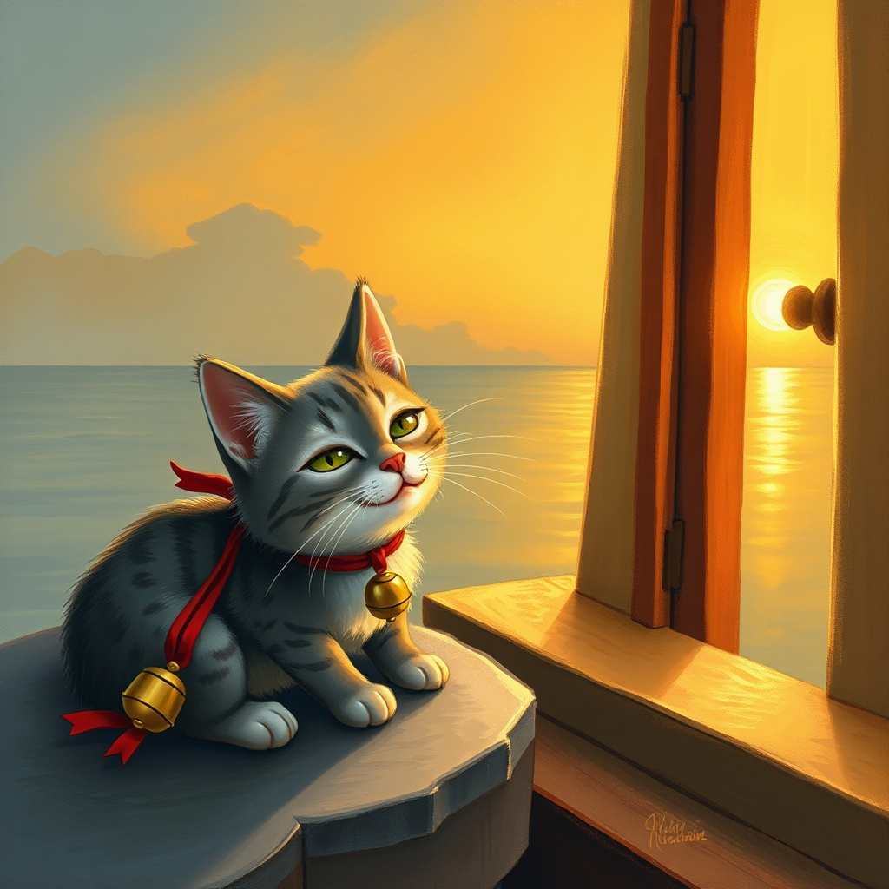

Whiskerlight, the Lighthouse Cat

At the edge of the sea, a lighthouse keeper kept his lantern steady—and his friend Whiskerlight kept watch. When the waves went quiet, Whiskerlight listened for lonely ships calling from the dark.

One stormy night, a ship’s signal flickered and faltered beyond the rocks. Whiskerlight padded along the iron stairs, pushed the keeper’s brass compass, and meowed until the lantern turned true.

Far below, Whiskerlight’s bell chimed in the wind, like a tiny guiding star. The ship followed the bright arc, and the rocks stayed hidden in mist.

When morning arrived, the ship’s lights faded into grateful waves—and Whiskerlight curled by the warm lantern. The keeper smiled and said, “Home is never far, when you have a guide.”